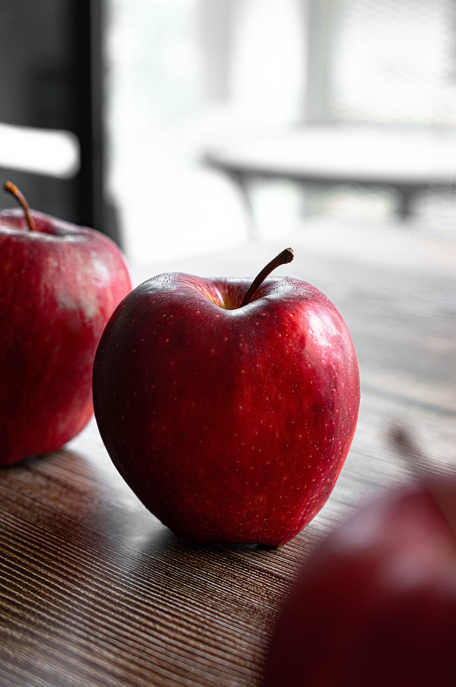

- 사과
- 오렌지
- 키위
사과
과육은 기본적으로 노란색~연두색[1]이며, 맛은 품종마다 다르다. 아래 사과 종
문단을 참고하자. 일반적으로 한국에서 말하는 사과 맛은 달콤새콤 + 아삭아삭하게
씹히는 탄력이 있고 단단한 과육의 식감을 말한다. 종마다 다르지만
잘 익은 사과는 껍질이 벗겨지지 않은 상태에서도 청량감이 있는 좋은 냄새가 난다.

건강
사과를 매일 하나씩 먹으면 의사 볼 일이 없다(an apple a day keeps the doctor
away)란 속담이 있을 정도로 유명한 가을 과일 중 하나다.[2] 비슷한 속담이
토마토에도 있다. 그만큼 비타민C와 무기질이 많아 간식 대용으로 사과를 한 알
먹는다면 비타민C 부족에 시달릴 일은 없다. 다만 과당이 많아서 통상적인 이미지와는
달리 다이어트 식품으로서는 그다지 효능이 좋지 않은데, 단위 중량 당 열량은
아보카도나 바나나 등과 함께 제법 높은 편에 속한다. 당연히 사과의 크기와
영양상태에 따라 다르지만 300g 정도 나가는 한 알이 200kcal는 넘을 수 있다고
생각하면 된다.